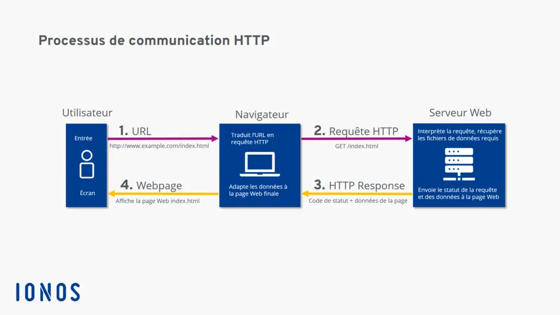

API, JSON, PROMISE, AJAX
LES API
API : Application Programming Interface
C'est une Interface qui permet au moins à deux programmes ou services de communiquer entre eux
Exemple Méthaphorique
- Tu es le client (le front-end).
- Tu commande un plat.
- Le cuisinier (le serveur du back-end) le prépare.
- Le cuisinier prépare le plat à partir du garde manger (la base de données) dans la cuisine (serveur API).
- L' AJAX joue le role de garçon de restaureant, il prend ta commande, la transmet à la cuisine puis d'apporte le plat
Le JSON
Le JSON = JavaScript Object Notation
C'est un format de données léger, lisible, utilisé pour échnager des données entre un serveur et une application web, ou entre deux applications n'utilisant pas le même langage
A quoi ça sert
- Envoyer ou recevoir des données via une API
- Stocker des données dans un fichier
- Communiquer entre différentes technologie (Java, PHP, Python, Ruby, etc...)
{
"nom": "Jean-Michel",
"age": 30,
"email": "jean@exemple.com",
"estActif": true,
"competences": ["HTML", "CSS", "JavaScript"]
}
Structure
- {} : un objet
- Un système comme les objets de clé : valeur
- Les clés sont toujours entre guillemets
- Les valeurs autorisées sont :
- String : "Jean-Michel"
- Nombre : 30
- booléen true/false
- tableau : []
- objets : {}
- null
JSON vs ObjetJavaScript
Attention, ne pas conforndte l"écriture du'un JSON avec un objet JS
{
"data": [0, 2, 456],
"owner": "Hypolite",
"admin": false,
"employes" : null
}
Conversions JSON - Objet js
const user = {
data : [0, 2, 456],
owner : "Hypolite",
admin : false,
employes : null
}
Conversions JSON - Objet js
// Convertir un JSON en objet JavaScript
// on va simuler un fichier JSON
const JSON = '{"nom": "Jean-Michel", "age": 30,}'
// On convertis la string en JSON en objet JavaScript
const obj = JSON.parse(json)
console.log(obj.nom)
// Convertir un objet JavaScript en JSON
const user = {
nom: "Jean-Bon",
age: 12,
}
const jsonObj = JSON.stringify(user)
console.log(jsonObj)
Les Promises
Une Promise (une promesse) est un objet JS qui représente une opération asychrone (c'est à dire qui ne se fait pas tout de suite)
Elles servent a éviter les "call-back hell" (des fonctions d'appel imbriquées entre elles de façon excessive)
L'enfer des rappels, ausssi appelé "Pyramide de la mort", est une situation ou plusieurs rappels imbriqués sont utilisés pour gérer des opérations asynchrones en js. Cela se produit généralement lorsque plusieurs taches asychrones dépendent des résultats des autres
Donc nous avons besoin des promesses pour améliorer la lisibilité des opérations asynchrones
Les promesses en 3 étapes
- Resolve (réussite)
- Rejected (refusé)
- Pending (état d'attente)
Les AJAX
AJAX = Asynchronous JavaScript and XML
A quoi ça sert ?
- A faire une requête HTML sans recharger la page
- Envoyer ou recevoir des données depuis un serveur API
- Créer des applications web dynamique (exemple : liste articles, formulaire...)
Requete HTTP -> HyperText Transfer Protocol
C'est un protocole qui permet à un client, votre navigateur, ou une application de bureau, de communiquer avec un serveur web pour échanger des données (HTML, JSON, ou des images, etc...)
